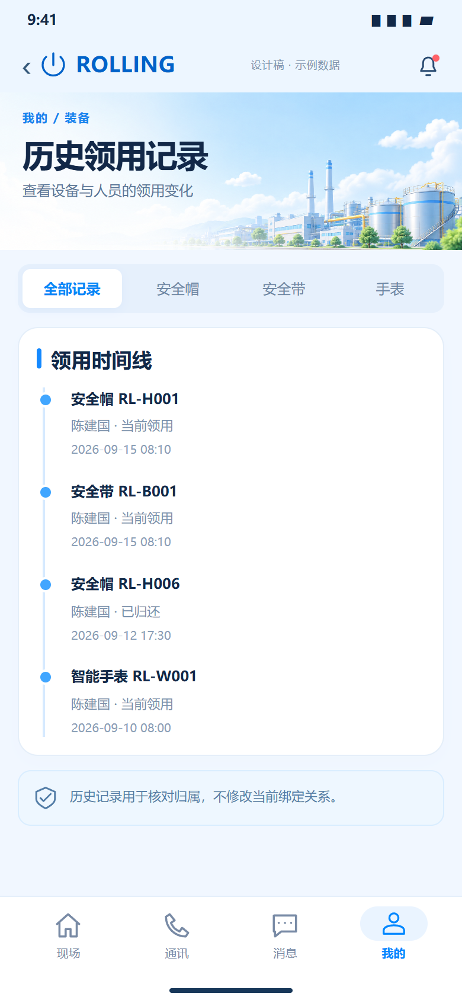
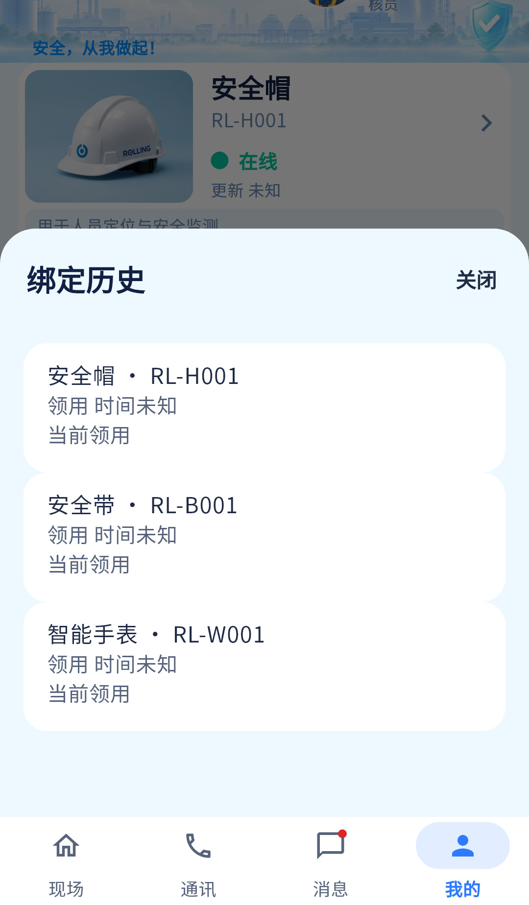

历史查询已有，但当前无有效装备时可能无法由装备行反推出人员ID，存在历史不可达边界。
相同 · 已有基础
历史领用/归还时间、设备号、当前归属及只读逻辑已有。
不同 · UI与场景
当前是“绑定历史”底部弹层，没有按设备类型页签和时间线；设计展开为完整历史内容稿。
01 / 先看 UI
两图显示宽度统一；设计390px与当前360逻辑宽的画布不同。各图可独立滚动到底，点击“原图”放大。


使用既有组件截图；业务数据为示例。
02 / 逐项核对功能与小交互
入口：我的装备 → 绑定历史 · 当前形态：弹层
| 编号 | 部位 | 设计要求 | 当前UI | 功能结论 | 下一步 |
|---|---|---|---|---|---|
| 32-01 | 容器标题 | 历史领用记录 | 当前绑定历史弹层，65%高度 | 已有代码 | 统一术语，保留弹层返回；不必新增主路由 |
| 32-02 | 类型筛选 | 全部/帽/带/表 | 当前无页签 | 缺失 | 按完整已获取历史分类，空结果可恢复 |
| 32-03 | 时间线 | 按时间串联领用变化 | 当前普通卡列表，未显式排序时间线 | 部分：记录存在，呈现不同 | 补排序与时间轴，未知时间放明示区域 |
| 32-04 | 记录字段 | 类型/SN、人员、当前领用/已归还、时间 | 当前类型/SN/领用/归还/原因，人名未在每项展示 | 部分：需补人名与编号 | 统一原始字段，当前/历史不能混淆 |
| 32-05 | 归还原因 | 图未列 | 当前有returnReason显示 | 已有代码 | 保留作为增强 |
| 32-06 | 历史范围 | 无当前装备也可查往次领用 | 当前从当前装备rows的personId集合查询assignments | 部分：rows无personId则返回空 | 从账号明确关联Person取ID，验全部已归还用户 |
| 32-07 | 来源差异 | 人员历史与设备历史 | 人员页按人，设备页按设备，本页按当前装备人员聚合 | 已有代码但作用域不同 | 明确每个入口的范围，避免同名历史混用 |
| 32-08 | 错误与重试 | 失败/空记录/切站 | 当前有重试、空态、scope校验 | 已有代码 | 保留，本机示例历史不混真实记录 |
| 32-09 | 只读 | 不改变当前绑定 | 当前没有领用/归还写入按钮 | 已有代码 | 不要为贴图引入绑定写操作 |
源码依据
queries/my_equipment_page.dart:678,699,752,762；queries/people.dart:270；queries/devices.dart:382
链接为随报告保存的带行号快照；行号对应分析时源码。以函数和字段共同定位，不能将请求代码视为执行成功证据。